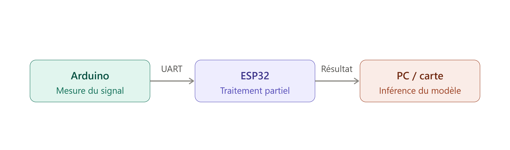

Documentation Feux Tricolores
PROJET FEUX TRICOLORES INTELLIGENTS
Documentation technique du projet
1. Contexte et motivation
Au Bénin, un grand nombre d'accidents routiers est dû au non-respect des feux de signalisation, et ce malgré la présence des forces de l'ordre.
Pour améliorer la sécurité routière, le projet propose un système capable d'imposer physiquement l'arrêt des conducteurs grâce à une barrière synchronisée avec les feux tricolores, tout en laissant passer les véhicules prioritaires (VP) grâce à une détection intelligente.
2. Objectifs
Objectif général
Mettre en place un système automatisé permettant de réguler la circulation en contraignant les usagers à respecter les feux tricolores via une barrière mécanique pilotée par un microcontrôleur.
Objectifs spécifiques
-
Détecter les véhicules prioritaires et leur attribuer un niveau de priorité.
-
Modéliser le système en 3D et fabriquer les pièces nécessaires.
-
Concevoir le circuit électronique complet (capteurs, actionneurs, alimentation, VEROBOARD).
3. Logique de fonctionnement
Le système considère une intersection à trois voies. Chaque voie est équipée :
-
d'un feu tricolore,
-
d'une barrière motorisée contrôlée par le microcontrôleur
- et d'un capteur de détection de véhicule prioritaire.
Fonctionnement normal
-
Feu vert → barrière relevée.
-
Feu rouge → barrière abaissée pour empêcher tout passage.
-
Feu orange → barrière en cours de descente.
Gestion des véhicules prioritaires (VP)
Lorsqu'un véhicule prioritaire est détecté sur une voie :
- si le feu est rouge, il passe automatiquement au vert et la barrière se relève ;
-
les autres voies passent au rouge et leurs barrières se baissent ;
-
en cas de détection simultanée de plusieurs véhicules prioritaires, le système choisit automatiquement celui ayant la priorité la plus élevée.
4. Étapes
Progrès actuels : un prototype du système a été réalisé en carton, recouvert de papier, avec feux et barrières imprimés en 3D. L'algorithme de gestion des feux et des barrières est déjà implémenté sous Arduino.
Étape 1 — Reprise et amélioration du code actuel (1 semaine)
Consolidation et optimisation du code Arduino existant pilotant le prototype à trois voies.
Étape 2 — Reconnaissance des véhicules prioritaires
Deux approches sont envisagées.
Méthode 1 : Détection par reconnaissance sonore via IA (3 semaines)
-
Identifier les grandeurs mesurables permettant de caractériser un son (fréquence, intensité, spectre, MFCC, etc.).
-
Étudier le fonctionnement du capteur audio.
-
Collecter les sons des différents véhicules prioritaires locaux (ambulance béninoise, police, sapeurs-pompiers...).
-
Réaliser une analyse exploratoire (spectrogrammes, MFCC, pics fréquentiels)
- Choisir un modèle adapté (CNN 1D, CNN 2D avec spectrogrammes, LSTM, etc.).
- Entraîner, valider et tester le modèle.
Méthode 2 : Détection par capteur de reconnaissance vocale (2 semaines)
-
Étudier le fonctionnement du capteur et valider sa compatibilité avec le microcontrôleur.
-
Collecter les sons des véhicules prioritaires.
-
Tester la reconnaissance en conditions réelles d'intersection.
Étape 3 — Intégration complète dans l'algorithme de contrôle (2 semaines)
-
Synchronisation entre reconnaissance sonore, feux tricolores et barrières.
-
Gestion des priorités multiples.
-
Tests sur maquette.
Étape 4 — Améliorations prévues
Ajout de relais pour transférer le son jusqu'au microcontrôleur
Permet de stabiliser la capture audio et d'éviter les perturbations.
Ajout d'une caméra pour vérifier l'identité du véhicule
Ce point répond au cas de l'imposteur :
- un véhicule non prioritaire pourrait émettre une sirène artificielle pour tromper le système.
- La caméra est placée à l'intersection des trois routes et peut effectuer une rotation à 360°.
Ainsi :
-
une caméra ou un lecteur code-barres / QR est ajoutée ;
-
chaque véhicule prioritaire possède un identifiant visuel (QR,marque distinctive) ;
-
si le son détecté ne correspond pas au véhicule vu par la caméra → suspicion d'imposture ;
-
le système peut alors capturer la plaque d'immatriculation pour enregistrement.
Étape 5 — Modélisation 3D et impression
- Conception CAO complète du système (supports, feux, barrière,structure).
- Impression 3D des pièces.
Étape 6 — Conception du circuit imprimé (PCB)
-
Architecture électronique : capteurs audio, caméra, microcontrôleur, servomoteurs, relais... • Schéma électronique puis routage PCB.
-
Fabrication et test.
-
Utiliser une alimentation se chargeant à partir d'énergie solaire.
5. État de l'art
Fabrication du système de 3 voies avec carton et impression 3D
Le prototype actuel du système à trois voies a été réalisé en carton, recouvert de papier, avec les feux et les barrières imprimés en 3D. Il permet de valider la logique de fonctionnement (feux, barrières, priorités) avant la fabrication d'un système à l'échelle réelle.

Implémentation Arduino pour le système de 3 voies
L'algorithme de gestion des feux et des barrières est déjà implanté sur Arduino et pilote le prototype à trois voies (logique feu vert / orange / rouge synchronisée avec la position des barrières sans la gestion des véhicules prioritaires).
Fichier source : /codes_docs/feux_tricolores_simulation/feux_tricolores_simulation.ino
Code d'apprentissage du traitement de son
Ce module concerne le traitement des signaux sonores captés en vue de la reconnaissance des véhicules prioritaires (Méthode 1 de l'Étape 2 : extraction de caractéristiques audio, MFCC, entraînement d'un modèle de classification).Il vient avec un enregistrement d’un son grave comme enregistrement de test.
Fichier source : /codes_docs/MFCCs/MFCCsTest.ipynb
Document explicatif pour le traitement de signal
Ce document présente la méthode des coefficients cepstraux à fréquence Mel (MFCC), utilisée pour caractériser les sons captés (sirènes des véhicules prioritaires) avant leur classification par le modèle de reconnaissance.
Fichier source : /codes_docs/MFCCs/Traitement_de_son_MFCC.md
Capteur KY-038
Il s’agit des informations récoltés et codes écrits pour la mesure des signaux temporels des sons des véhicules via le capteur KY-038.
Câblage, fonctionnement et image du capteur
Fichier source : /codes_docs/KY-038_capteur_son.md
Codes Arduino d'obtention du spectre temporel
Ces codes permettent d'acquérir, via le capteur KY-038, le spectre temporel du son capté, utile pour l'analyse exploratoire évoquée à l'Étape 2.
En effet, en se basant sur les caratéristiques matériels et les exigences de vitesse pour la reconnaissance en temps réel des véhicules prioritaires, on a décidé qu’il serait mieux d’utiliser un ESP32 plutot qu’un Arduino pour la mesure parce qu’il est plus rapide et plus performant. Mais il y eu un problème de mesure lorsqu’on cablait directement le capteur KY-038 à l’ESP32 : les valeurs mesurées étaient constamment nulles. Donc pour garder l’efficacité en terme de calcul de l’ESP32 et la mesure qui a pu être testée avec l’Arduino, il a été décidé de faire communiquer par série (UART) l’Arduino et l’ESP32 de telle facon que l’Arduino mesure le signal et envoie ces mesures à l’ESP32 qui lui gère une partie du traitement dont le résultat est renvoyé vers l’ordinateur ou la carte sur laquelle est inférée le modèle.
La figure suivante décrit le processus complet.

Fichiers sources :
- /codes_docs/ESP32_spectre_temporel/ESP32_spectre_temporel.ino
-/codes_docs/ARDUINO_spectre_temporel/ARDUINO_spectre_temporel.ino
Base de sons de véhicules prioritaires
Les sons de certains véhicules prioritaires comme le SAMU, la police ont été récupérés et enregistrés dans le dossier sons.
Fichiers sources: /sons
11. Analyses globales
Analyse des contraintes et risques
Ces éléments sont issus du rapport de réunion du projet :
-
Priorité d'État : le projet, bien qu'utile, pourrait ne pas être considéré comme une priorité absolue pour l'État en termes de coût/utilité actuelle.
-
Fiabilité des données : risque de construire une base de données erronée si les capteurs ne sont pas correctement calibrés par rapport aux standards commerciaux.
Registre des questions posées
Plusieurs interrogations critiques ont été soulevées, nécessitant des réponses avant la phase suivante :
-
Viabilité budgétaire : le coût total du projet est-il supportable si l'on doit déployer des moteurs, des barrières et des capteurs sur l'ensemble du réseau national ?
-
Unité de mesure acoustique : quelle unité doit être utilisée pour les capteurs de son ? Le décibel (volume) ou l'unité d'amplitude sonore ?
-
Capacité technique : les capteurs de son de base sont-ils suffisants pour les besoins du projet ?
-
Spécifications des radars : quelle est la distance maximale de capture des radars pour les véhicules en mouvement ?
Pour rappel,les pistes techniques suivantes ont égalementété discutées en réunionpour renforcer le système :
-
Intégration de radars et caméras : ajout de radars pour détecter les excès de vitesse en amont et de caméras pour identifier les plaques d'immatriculation en cas d'infraction au feu rouge.
-
Optimisation du radar : utilisation de radars capables de flasher à une distance maximale pour anticiper le freinage des conducteurs.
-
Étalonnage des capteurs de son : utilisation d'un capteur commercial standard comme référence pour vérifier la précision des valeurs enregistrées par le prototype dans la base de données.
-
Protocole de communication : utilisation de protocoles comme l'I2C ou la communication série pour lier les composants électroniques.
-
Priorité à la barrière physique : l'usage d'une barrière est jugé plus efficace que les simples caméras (utilisées aux USA) car elle impose l'arrêt physique du véhicule.
12. Propositions de nouvelles orientations pour le projet
1. Continuité du travail sur le modèle de reconnaissance de son
2. Suppression des barrières et remplacement par une méthode basée sur la détection de plaque d'immatriculation par caméra
Cette orientation ferait évoluer le système d'un dispositif de contrainte physique (barrière) vers un dispositif de contrôle a posteriori par caméra, à l'image des systèmes utilisés aux États-Unis évoqués en réunion. Elle s'appuierait sur la brique caméra déjà envisagée à l'Étape 4 (identification visuelle des véhicules, capture de plaque d'immatriculation en cas d'infraction ou de suspicion d'imposture).
Note : Cette piste répond en partie à la question de viabilité budgétaire soulevée en réunion, une caméra pouvant être moins coûteuse à déployer à grande échelle qu'une barrière motorisée, au prix d'un contrôle non plus préventif mais répressif.
3. Modèle d'IA de gestion de la densité du trafic
Il s’agit de développer un modèle d’IA particulièrement par apprentissage par renforcement pour gérer la congestion du traffic de manière optimale et automatique.
4. Fabrication locale des Feux Tricolores
Cette suggestion s’oriente dans la direction de la fabrication de Feux tricolores en exploitant les matériaux disponibles au Bénin.